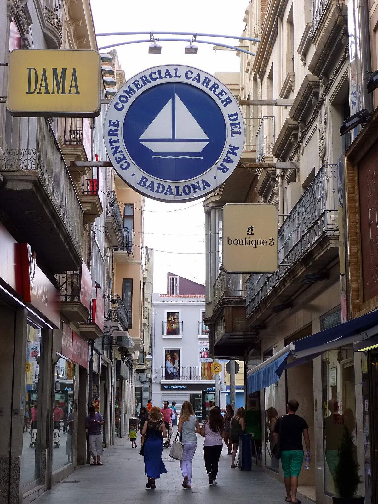

Voto doble · Elecciones: mayo y julio de 2023
Badalona, la ciudad del voto doble
Badalona dio al PP el 56 % en mayo y el 17 % en julio: la mayor distancia de España entre voto local y estatal
Por Nacho G. del Álamo ·
En las municipales del 28 de mayo de 2023, el PP sacó en Badalona el 55,7 % del voto válido. En las generales del 23 de julio, dos meses después, el 16,6 %, y el PSC ganó con el 40,7 %. Son 39 puntos de diferencia, la mayor entre los 420 municipios de más de 20.000 habitantes.
Dato: verificable y reproducible
La pregunta: ¿Dónde se separa más el voto a un mismo partido entre las municipales y las generales?
Mayo y julio
DatoBadalona votó dos veces en dos meses y pareció dos ciudades distintas. El 28 de mayo de 2023, en las municipales, el PP sacó el 55,7 % del voto válido. El PSC se quedó en el 14,6 %, el espacio de los comuns y Podemos en el 13,1 % y ERC en el 7,6 %.
DatoEl 23 de julio, en las generales, el orden se dio la vuelta. El PSC ganó con el 40,7 %; el PP cayó al 16,6 %, apenas por delante de Sumar (15,5 %). Vox, que en mayo apenas existía en la ciudad (1,3 %), sacó el 8,0 %.
DatoEntre las dos citas, la participación subió del 57,9 % al 63,7 %: las dos fotos no las hicieron exactamente los mismos votantes.
La mayor distancia de España
DatoNingún municipio de más de 20.000 habitantes separa tanto su voto local y su voto estatal al PP. En Badalona fueron 39,1 puntos. Le siguen Carmona (Sevilla, 32,6), Onda (Castellón, 27,5), Torrejón de Ardoz (Madrid, 27,5), O Porriño (Pontevedra, 25,0).
Una distancia que viene de lejos y crece
DatoNo es una rareza de 2023. En 2015 el PP sacó en Badalona el 34,2 % en las municipales y el 14,7 % en las generales; en 2019, el 37,6 % y el 9,4 %.
PatrónLa brecha ha crecido en cada ciclo: 19,5 puntos en 2015, 28,2 en 2019 y 39,1 en 2023.
PatrónLos datos sugieren por dónde va el cambio, aunque no quién lo hace. En julio el PSC sube 26,1 puntos y Vox 6,7 respecto a mayo, justo cuando el PP pierde. Con datos agregados no se puede saber qué vecinos cambian de papeleta; solo que el saldo cambia.
Sobre el terreno
DatoBadalona se levanta sobre Baetulo, una ciudad romana fundada hacia el año 100 a. C.; su yacimiento, bajo el centro histórico, es bien cultural de interés nacional desde 1995 y sus termas se visitan en el Museu de Badalona. Fuentes: 1, 2
Lo que no sabemos
- HipótesisCuánto se debe al candidato del PP en la ciudad y cuánto a otros factores locales. Es la hipótesis evidente, pero requiere encuestas postelectorales o estudios que esta pieza no ha incorporado.
Dato: verificable y reproducible. Patrón: relación descriptiva, sin causa. Hipótesis: explicación posible que aún no tiene dos fuentes independientes.
Los datos
| Elección | PP | PSC | Comuns / Sumar | ERC | Junts | Cs | Vox | Participación |
|---|---|---|---|---|---|---|---|---|
| Municipales 2015 | 34,2 | 14,1 | 24,2 | 11,0 | 7,9 | 5,6 | 0,0 | 57,4 |
| Generales 2015 | 14,7 | 19,9 | 30,1 | 9,9 | 6,9 | 14,5 | 0,0 | 70,0 |
| Municipales 2019 | 37,6 | 19,9 | 8,5 | 24,5 | 5,1 | 1,8 | 0,4 | 63,6 |
| Generales nov. 2019 | 9,4 | 25,6 | 19,4 | 17,1 | 6,8 | 6,4 | 8,4 | 69,7 |
| Municipales 2023 | 55,7 | 14,6 | 13,1 | 7,6 | 4,8 | 0,3 | 1,3 | 57,9 |
| Generales 2023 | 16,6 | 40,7 | 15,5 | 9,7 | 5,2 | 0,0 | 8,0 | 63,7 |
Método y fuentes
- Qué se compara
- Las municipales y las generales de 2015, 2019 y 2023 en Badalona, y la diferencia de voto al PP entre municipales y generales de 2023 en los 420 municipios de más de 20.000 habitantes.
- Límites
- El censo de las municipales incluye a residentes de la Unión Europea, que no votan en las generales. En Badalona su peso es pequeño, pero los dos censos no son idénticos.
- Metodología completa
- Cómo se calculan los porcentajes, el modelo, los gemelos y los escaños
- Fuentes
- Autoría
- Nacho G. del Álamo
- Revisión de datos y texto
- Nacho G. del Álamo, 6 de octubre de 2026
- Publicado · actualizado
- 6 de octubre de 2026 · 7 de octubre de 2026
- Correcciones
- Ninguna. Historial del Atlas